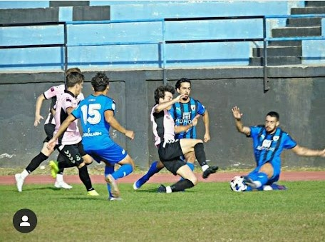

Defensas

Centrales
Generalmente en el futbol se juega con dos defensas centrales aunque tambien es habitual encontrar equipos que jueguen con tres centrales, como su nombre dice son aquellos jugadores que ocupan la parte central de la zona defensiva y se encargan en progeter al portero de que los atacantes contrarios lleguen libres con balon para anotar.
Laterales y Carrileros
Los laterales y carrileros son aquellos que juegan a los lados de los defensas centrales cubriendo las bandas. Los laterales cumplen una función mas defensiva a diferencia de los carrileros que tienen mas libertad de ir hacia delante y acompañar a los atacantes.